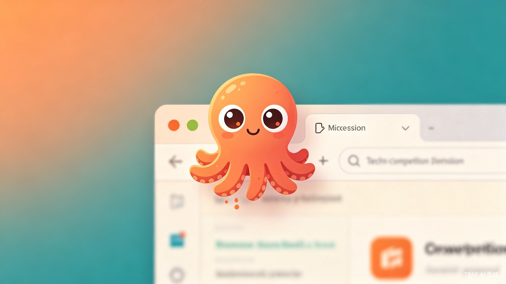
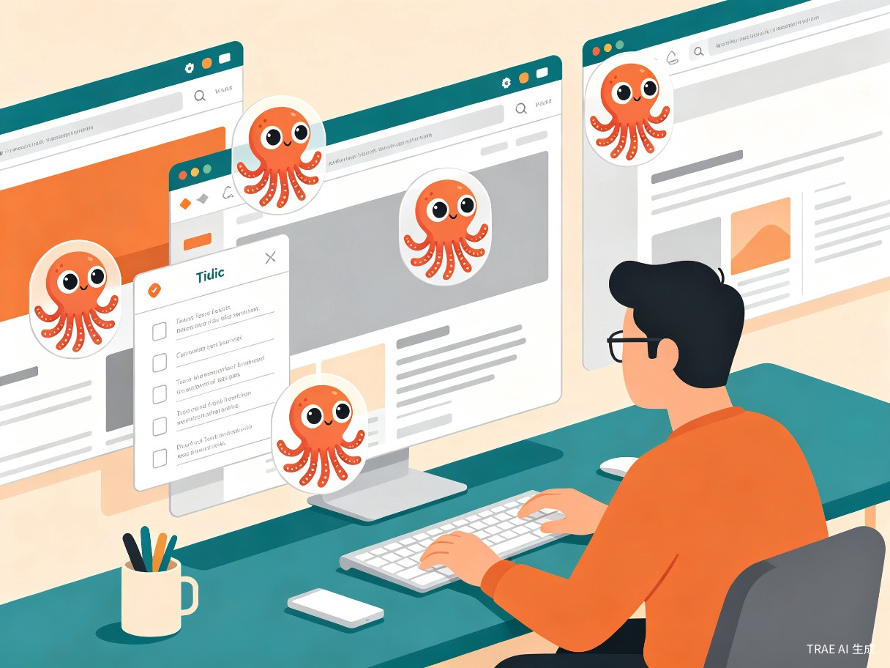
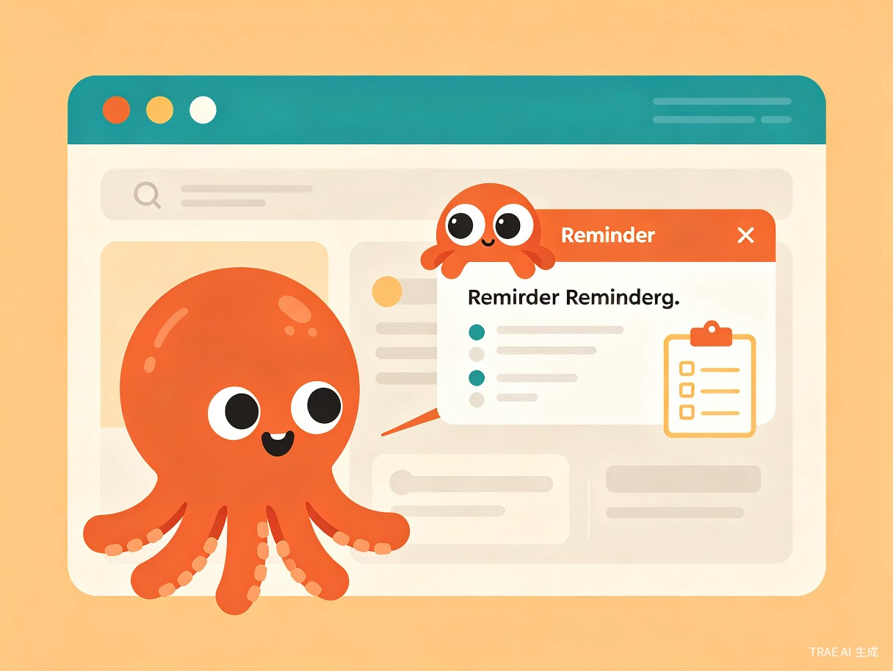
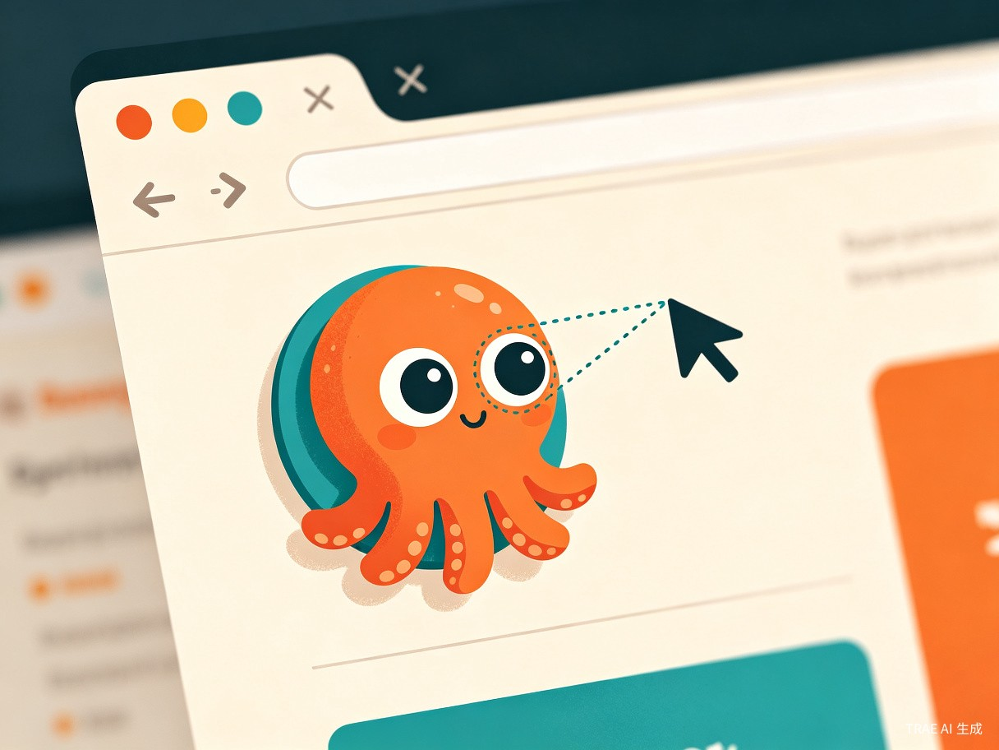

章鱼待办助手 — 你的网页专属小管家
一个会"盯"着你看的浏览器插件，为每个网站量身打造待办清单与智能提醒，让每一次上网都更有目的、更高效。

一、创意名称与介绍
创意名称
章鱼待办助手 — 名字灵感来自章鱼的多条触手，寓意它能同时"抓住"多个网站的待办事项。章鱼的大眼睛会追踪你的鼠标，仿佛一直在注视着你，帮你记住每一个网页上的待办任务。
想解决什么问题
我们在日常浏览网页时，经常遇到这样的场景：在某个网站上看到需要后续处理的内容（比如一篇待读的长文、一个待购的商品、一个待填的表单），但没有便捷的方式将这些意图绑定到特定网页上。传统的书签和笔记工具脱离了网页上下文，打开后需要二次检索，效率低下。用户需要一个与网页深度绑定、随网页自动激活的轻量级待办系统。
为什么会想到做这个
灵感来源于一个日常痛点：我经常在某个技术文档网站看到需要后续研究的 API，却总是忘记回头处理。如果有一个"住"在网页上的小助手，每次打开这个网站就主动提醒我该做什么，那该多好。同时，我希望这个助手不是冰冷的工具，而是有温度、有个性的——一双会追踪鼠标的眼睛，让工具本身也充满趣味。
大概是什么产品
章鱼待办助手是一款浏览器扩展插件（Chrome Extension），以悬浮章鱼按钮的形式常驻在网页上，为不同域名和特定网址提供专属的待办清单管理与智能提醒服务。
二、目标用户及痛点
面向哪些用户
知识工作者与研究员
需要在多个文档站点、学术平台、技术博客间切换，每个网站都有不同的待办事项需要追踪。
电商购物爱好者
经常在购物网站浏览商品但不会立即下单，需要记录"等降价再买"、"对比其他平台"等购物意图。
效率工具重度用户
使用大量 SaaS 产品和 Web 工具，每个工具的特定页面都有需要定期完成的操作流程。
学生与自学者
在线学习平台上每个课程页面都有不同的学习任务，需要按进度完成并做好记录。
在什么场景下使用
- 场景一：网页待办绑定 — 在任意网页上，点击章鱼按钮快速添加"下次来这个页面要做什么"的待办事项，自动绑定当前域名和 URL。
- 场景二：智能提醒弹出 — 下次访问该域名或特定 URL 时，章鱼待办助手主动弹出提醒面板，展示之前记录的待办清单。
- 场景三：多站点管理 — 在插件管理面板中统一查看所有网站绑定的待办事项，按域名分组、按优先级排序。
- 场景四：趣味交互 — 悬浮章鱼的大眼睛实时追踪鼠标位置，为枯燥的待办管理增添一份趣味和陪伴感。
当前痛点

三、核心功能设计
眼球追踪交互
悬浮章鱼按钮上的大眼睛实时追踪鼠标位置，通过计算鼠标与眼球中心的相对角度，动态调整瞳孔偏移，营造"章鱼一直在看着你"的生动效果。
域名级待办管理
支持按域名（如 github.com）或精确 URL 添加待办事项，灵活控制提醒范围——可以设置"所有 GitHub 页面"或"仅这个 PR 页面"的待办。
智能场景提醒
进入匹配的网页时自动弹出提醒面板，展示该域名/URL 下的待办清单，支持设置提醒优先级和到期时间。
全局管理面板
通过扩展弹窗统一管理所有网站的待办事项，支持域名分组、搜索筛选、批量操作和数据导出。
移动你的鼠标试试 — 看看小章鱼的眼睛会不会跟着你转
四、价值与意义
效率提升价值
章鱼待办助手将待办事项与网页上下文深度绑定，消除了"记住去哪个网站做什么"的认知负担。用户无需额外打开待办应用、搜索相关记录，在正确的场景自动获得正确的提醒。据研究，情境化提醒比通用提醒的任务完成率高 40% 以上，章鱼待办助手正是将这一理念产品化的创新实践。
情感化设计价值
章鱼的大眼睛追踪为工具注入了人格化特征，让用户感受到"有一个小章鱼在陪我上网"。这种情感化设计在效率工具领域非常稀缺——它不仅提升了使用愉悦感，更通过趣味性降低了用户坚持使用待办工具的心理门槛，让"养成习惯"变得自然而然。

五、技术实现方案
技术栈
核心实现要点
- 眼球追踪算法 — 通过 Content Script 监听 mousemove 事件，计算鼠标坐标与眼球中心的相对向量，将瞳孔位移限制在眼白范围内（最大偏移量 = 眼白半径 - 瞳孔半径），使用 CSS transform 实现平滑过渡。
- 域名匹配引擎 — 使用 URL API 解析当前页面地址，支持精确匹配（完整 URL）和通配匹配（域名级），通过 Chrome Storage API 持久化存储待办数据。
- 自动提醒机制 — Content Script 在页面加载完成后自动查询当前域名/URL 是否存在待办记录，匹配成功时触发提醒面板的渐入动画。
- 数据隔离与同步 — 待办数据按域名分组存储，支持 Chrome 账号同步，确保多设备间数据一致。

六、差异化优势
| 特性 | 章鱼待办助手 | 浏览器书签 | Todoist 等待办 App | 浏览器笔记插件 |
|---|---|---|---|---|
| 绑定到特定网页 | ✓ | ✗ | ✗ | 部分 |
| 进入网页自动提醒 | ✓ | ✗ | ✗ | ✗ |
| 情感化交互设计 | ✓ | ✗ | ✗ | ✗ |
| 轻量无侵入 | ✓ | ✓ | ✗ | 部分 |
| 域名级分组管理 | ✓ | ✗ | ✗ | ✗ |
七、未来展望
- AI 智能建议 — 结合 TRAE AI 能力，根据用户浏览习惯自动推荐待办事项，例如"你上次在这个页面标记了待读文章，现在要继续吗？"
- 团队协作 — 支持将某个网站的待办清单分享给团队成员，实现"团队共享的网页任务看板"。
- 跨浏览器支持 — 从 Chrome 扩展到 Firefox、Edge、Safari 全平台覆盖。
- 圆脸个性化 — 支持自定义章鱼外观（表情、颜色、配饰），打造专属的网页小助手形象。